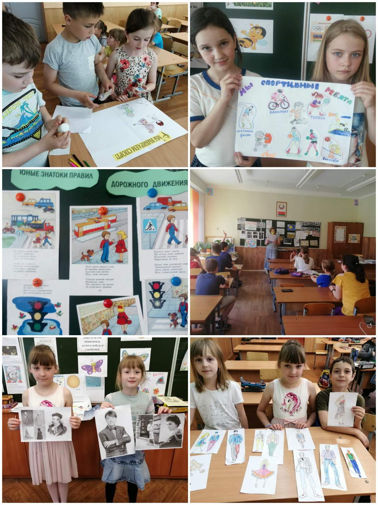
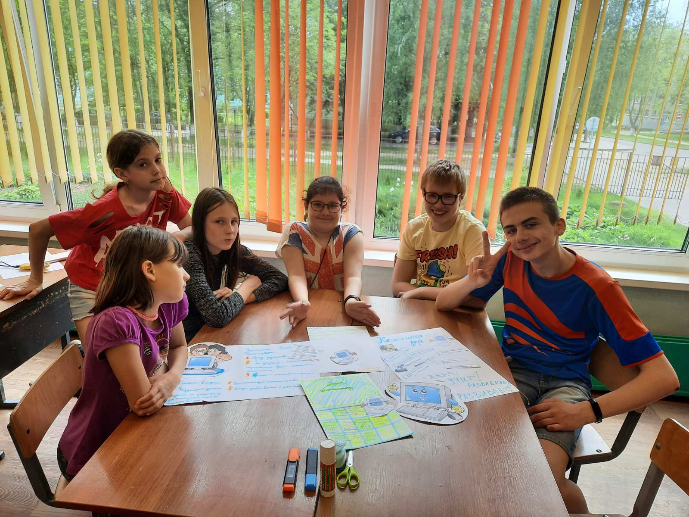

Осень 2020
День шестой
День пятый
День четвёртый
День третий
День второй
День первый
«Фотоотчёт 2020»
Лагерь "Криничка"
Зима 2020
День третий
Приближается Новый год… Праздник подарков, разноцветных хлопушек, салютов, фейерверков! Мероприятия в оздоровительном лагере
«Криничка» в этот день были проникнуты таинственной атмосферой праздничного настроения. Ребята с успехом прошли
информационно-познавательный квест «Из истории празднования Нового года», узнав, какие деревья наряжают и как проходит
празднование Нового года в различных странах мира. Выставка рисунков «Новогодние фантазии» была яркой и образной.
Каждый ребенок верит в чудеса, особенно которые случаются под Новый год. В проекте «Почта Деда Мороза» дети отразили свои мечты
и желания. В ходе беседы «Китайские символы Нового года» произошло знакомство с 12 символами Нового года. “Фальклорная скарбонка”
по теме “Ой, калядачкі, бліны і аладачкі” была проведена на белорусско языке с целью знакомства с празднованием Рождества в
разных местах Беларуси. На мероприятии звучали белорусские рождественские песни, были представлены танцы ряженых, обряды,
конкурсы.
Мастер-класс “Рождественский подарок” позволил детям изготовить сувениры своим родным и близким. В свободное от мероприятий
время воспитанники общались друг с другом, играли в настольные игры. В течение дня были проведены минутки здоровья, гигиены,
безопасного поведения.
Спортиыные, музыкальные часы, занятия по интересам также сплотили детский коллектив. Сегодня каждый ребенок имел возможность
поздравить с Новым годом всех друзей и работников лагеря, пожелав им всех благ, удачи, везения и здоровья.
День второй
Второй день нашего школьного оздоровительного лагеря «Криничка»
прошел под названием «День познаний и открытий». Дети пришли в лагерь с
позитивным настроением. День принёс им немало полезной информации.
Познавательная сфера деятельности открыла себя в часе познаний и
открытий «История ёлочных игрушек», в ходе которого ребята узнали про
удивительную историю возникновения ёлочных игрушек в разных странах
мира и их путешествия по планете. Работа «Лаборатории эко-профессий»
ввела в мир профессий, которые приносят не только пользу окружающим, но
и творят добро. Философский стол «Что нужно для полного счастья?» собрал
воедино мнения ребят о счастье. Ребята спорили, доказывали свою точку
зрения, приводили в пример жизненные ситуации, где люди были
действительно счастливы. Это мероприятие дало возможность детям
осознать, что действительно делает человека счастливым. КТД
«Бумажное кружево зимы» создало прекрасные рельефные композиции из
белой бумаги, будто сама зима-волшебница действительно сотворила чудеса,
вдохнув в руки ребят красоту, изящество, утонченность.
Сказочным было путешествие в кино «В мире сказок». Ребята
посмотрели шикарный мультфильм «Красавица и Чудовище», где добро
победило зло, где герои, несмотря на невзгоды, обретают счастье и любовь.
Затем была проведена игра-викторина «Узнаем сказку».
День не обошёлся без бесед «Стоп, наркотики!», минуток личной
гигиены, здоровья, безопасности. В ходе занятия кружка «Юный инспектор
дорожного движения» дети познакомились со значением кресел и ремней
безопасности в легковой машине, узнали их историю возникновения,
познакомились с правилами безопасности в транспорте. Подвижные игры на
свежем воздухе, спортивный час «Большая эстафета» развивали ловкость,
выносливость, силу.
В этот день дети увлеченно посещали кружки по бисероплетению,
вязанию, вышивке, изобразительному искусству,IT-класс.День прошел
активно, позитивно, креативно, радужно, познавательно, творчески.
Осень 2020
День шестой
День пятый
День четвёртый
День третий
День второй
День первый
Лето 2020
День одиннадцатый
День десятый
День девятый
День восьмой
День седьмой
День шестой
День пятый
День четвёртый
День третий
День второй
День первый
Весна 2020
День шестой
День пятый
День четвёртый
День третий
День второй
День первый